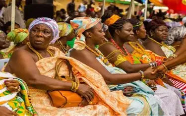
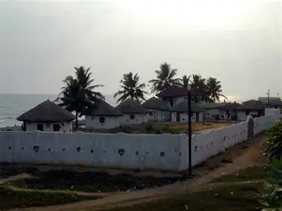
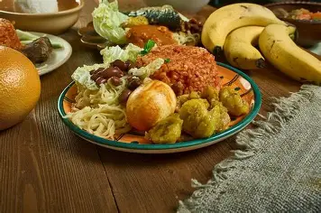

Culture
Ghana is known for its rich cultural heritage, colorful festivals, traditional music, and warm hospitality.

History
Ghana was the first African country to gain independence in 1957. It has a deep history connected to the transatlantic slave trade and ancient kingdoms.

Food
Popular Ghanaian dishes include jollof rice, banku, fufu, waakye, and kelewele. Ghanaian cuisine is flavorful and diverse.

Tourism
From Cape Coast Castle to Mole National Park, Ghana offers beautiful beaches, wildlife, and historical sites.